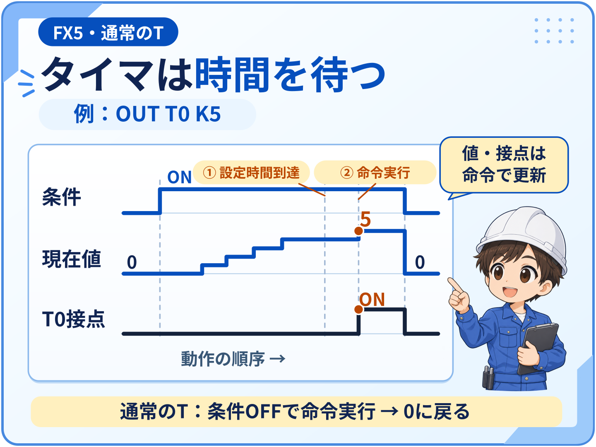
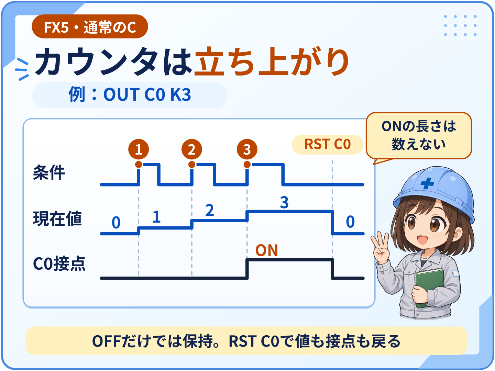
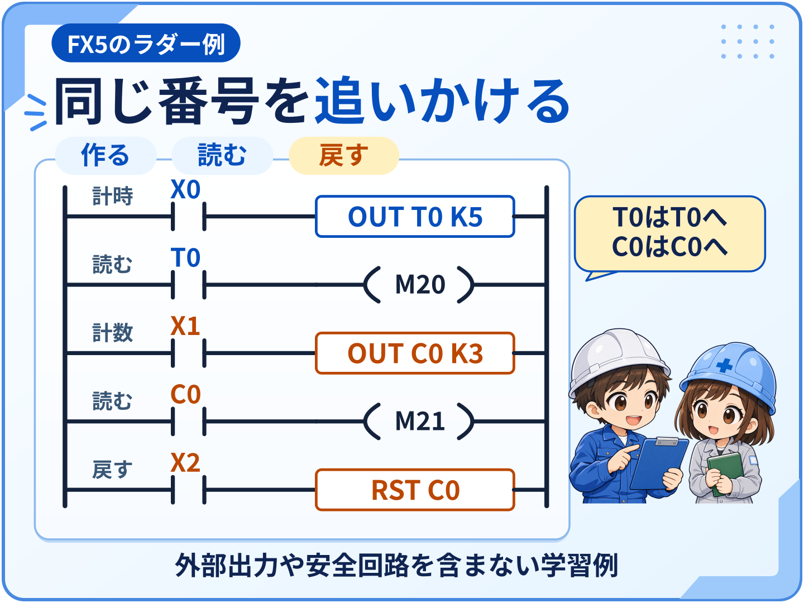

1. Tは時間、Cは回数。ただし「何を読むか」が大切
三菱電機MELSEC iQ-F FX5では、T0はタイマの一つ、C0はカウンタの一つです。末尾の0は番号で、時間や回数を表しません。
同じT0でも、命令の中では時間を測る対象、接点の位置では「タイムアップしたか」の判定に使います。C0も、命令では回数を数える対象、接点では設定回数に達したかの判定です。
後輩T0が2か所あります。別々のタイマですか？

先輩番号が同じなら、まず使われ方を見よう。値を作る命令と、完了を読む接点は役割が違うよ。
ここではFX5の基本命令を例にします
T・Cという記号、時間の単位、保持、リセットの仕様は他機種や命令では同じとは限りません。説明用の例で、設定変更や実機への書き込みは扱いません。
2. デバイス番号・設定値・現在値・完了接点
番号を見つけたら、「どのデバイスか」「いくつで完了か」「今いくつか」「完了したか」を分けると、モニタの値を読み違えにくくなります。
デバイス番号：T0／C0
どのタイマ・カウンタを読んでいるか。末尾の数字は番地です。
設定値：K5／K3の例
命令に書かれた目標値。タイマは単位も見ます。K5だけでは秒数は決まりません。
現在値
その時点で進んだ計時値・回数。モニタ画面がどの項目を表示しているかも確認します。
完了接点：T0／C0
ラダー内の結果を読む条件。接点のONだけで、外部出力や機械の動作は確認できません。
3. タイマT：設定値へ向かって進む
FX5の通常のタイマを使う例です。OUT T0 K5は、ここでは100 ms単位で5、設定時間は0.5秒。同じT番号でも、FX5では実際の計時命令によって単位が変わります。T0だから100 msとは判断しません。
タイムアップ時刻と、プログラム上のT0接点がONになる実行点は同じとは限りません。通常の周期実行では、設定値に達したあと最初にタイマのコイル命令が実行されると、完了接点が更新されます。

保持タイマSTは別
FX5のSTは、コイルがOFFになっても現在値と接点の状態を保持し、再びONすると残りの計時を続けます。たとえばST0なら RST ST0 の実行で現在値と接点を戻します。電源断で何を保持するかは別の設定・仕様の確認が必要です。
4. カウンタC：ONの長さではなく、変化を数える
FX5の通常の加算カウンタで OUT C0 K3 を読む例。実行時に計数条件がOFF→ONになったところで1増えます。ONが続いても毎スキャン増えるわけではなく、OFFになっただけでも現在値は消えません。
3回目で現在値が設定値に達すると、C0接点がONになります。RST C0が実行されると現在値が0になり、C0接点がOFFになります。リセット条件が成立し続けている間は計数できません。

5. 止まったときの見分け方
Tが進まない
記録で起動条件と命令の実行を分けて確認。条件が短く途切れ、通常のTが0へ戻っていないかも見ます。
Cが増えない
計数条件がずっとONではないか。立ち上がりがプログラムで捉えられたか、RST条件が残っていないかを分けます。
値が進んでも結果が出ない
設定値、単位、完了接点の状態を確認。完了接点がONなら、使う側の別条件を追います。
現場で一瞬しか見えない
表示の更新とPLC内部の実行は別です。既存のトレースや履歴、資料を優先し、画面の一枚だけで判断しません。
6. 同じ番号を「作る・読む・戻す」で探す
同じ番号をクロスリファレンスで探し、値を作る命令、完了を読む接点、値を戻す条件を区別します。次の図では右端のM20・M21は内部信号で、実際の出力や装置動作は描いていません。

同じ条件に見えても、実行順を確認
使う側が命令より先に評価される構成や、命令が周期中に実行されない構成では、読み取れる結果のタイミングが変わります。詳細は設備のプログラムとFX5のマニュアルで照合します。
7. 設備の動作を変えず、既存の状態から確認する
タイマ・カウンタの設定、リセット、強制入力は設備の動作に影響します。この記事では、承認済みの図面・プログラム、既存の監視表示や履歴を読むところまでを扱います。
完了接点は安全や停止の証明ではない
作業可否をPLC内部の接点や画面表示だけで判断しません。実機の点検・変更が必要な場合は、有資格者・担当者が設備の隔離と安全確認を含む現場手順に従ってください。
本体にERR/ALMが表示されている場合は、先に PLCのエラーランプが点いた時に見る順番 を確認します。
8. まとめ：番号の次に役割を見る
- タイマTは起動条件、時間の単位、現在値、完了接点を追う。
- カウンタCは何の立ち上がりを数え、いつ戻すかを追う。
- 同じ番号でも、命令の設定・数値表示・接点の状態は別の情報。
メーカー公式資料
最終内容更新：
公式資料確認日：。実機では使用機種、命令、プログラムに合う最新版を参照してください。
- 三菱電機 MELSEC iQ-F FX5 User’s Manual (Application)：4.2 User Devices、冊子pp.60–65。T・STの保持、時間単位、接点更新の実行点、Cの計数とリセット。